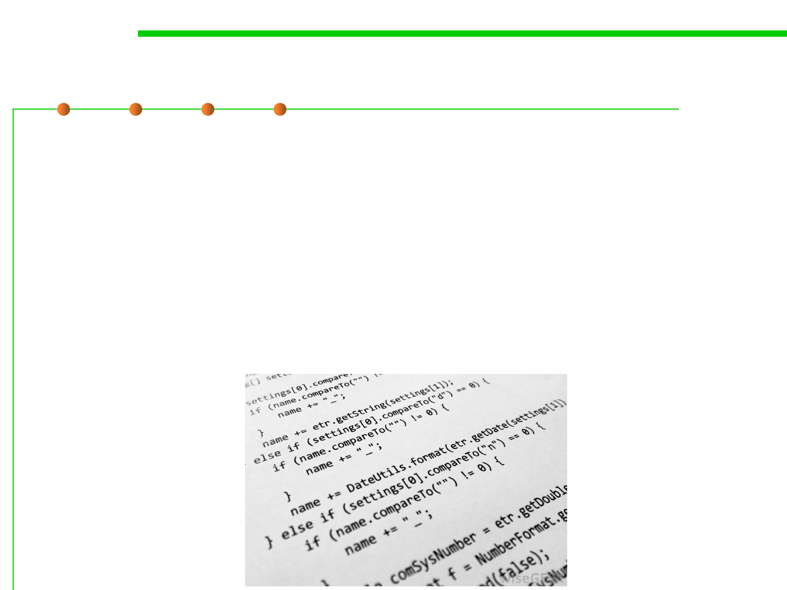

What is “refactoring”?
9.1 Code Smells Refactoring
▪ Chikosfky and Cross: “the transformation from one representation
to another at the same relative abstraction level, while preserving
the subject system’s external behavior (functionality and
semantics)”
▪ Griswold: “source-level structural transformations that are
guaranteed to preserve the meaning of programs”
▪ Opdyke: “program restructuring operations that preserves the
behavior of a program”